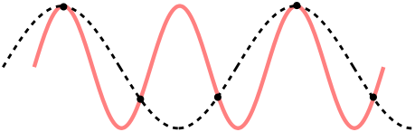

The Nyquist-Shannon sampling theorem tells us that in order to reconstruct a signal with frequency content up to F Hz, we need to sample at a rate of at least 2F Hz. Sampling at a lower rate may result in frequencies above the Nyquist frequency being turned into nonexistent lower-frequency components.
The effects of aliasing are very audible. Here's a segment of Taylor Swift's Shake It Off, sampled at 48 KHz.
Now, we downsample to a rate of 4 KHz by keeping every 12th sample and discarding all the others, producing this clip: (warning, it doesn't sound very good!)
To prevent aliasing, we need to remove all frequency content above the Nyquist frequency before downsampling. This can be accomplished by using a low-pass filter. This is the result if we apply a FIR low-pass filter with a cutoff of 2 KHz to our audio before downsampling:
The audible aliasing artifacts are now gone.